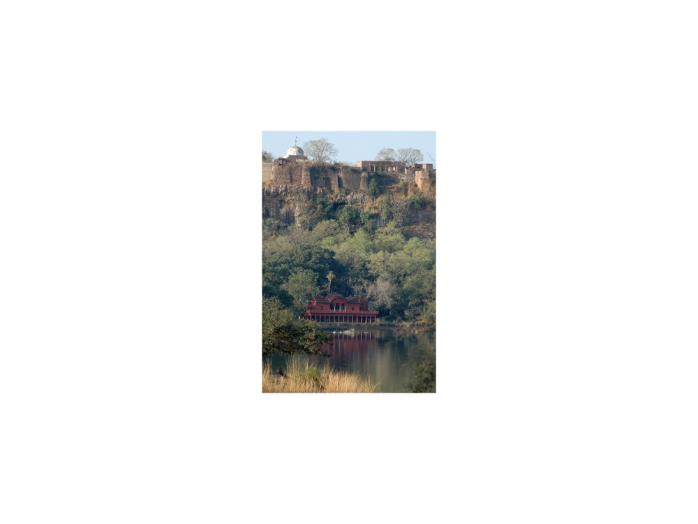
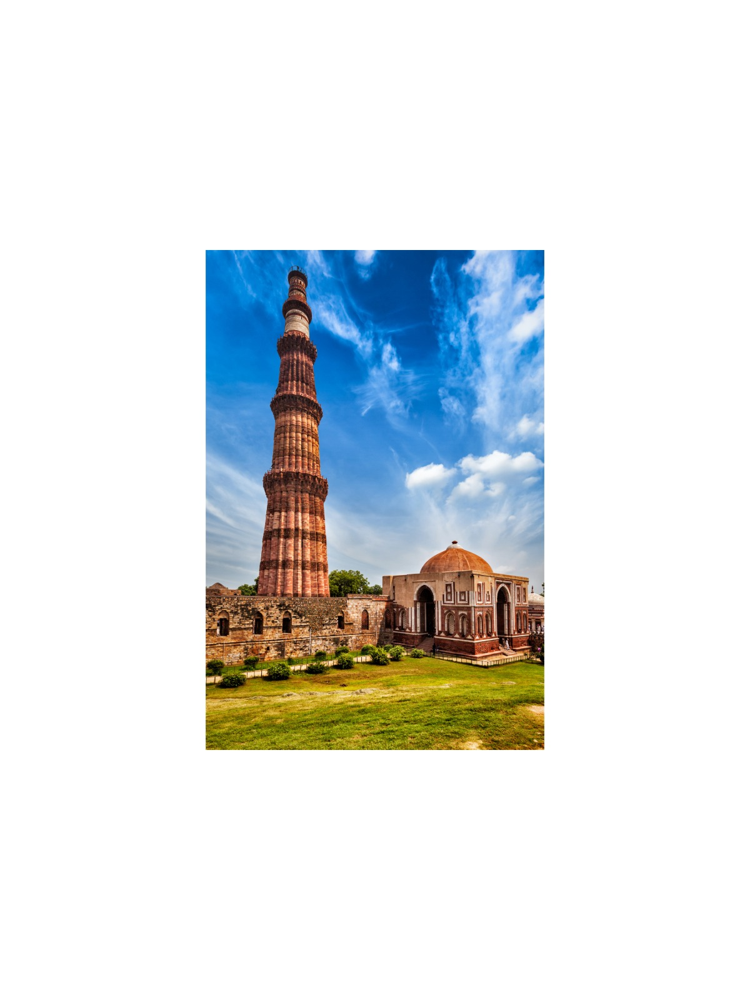
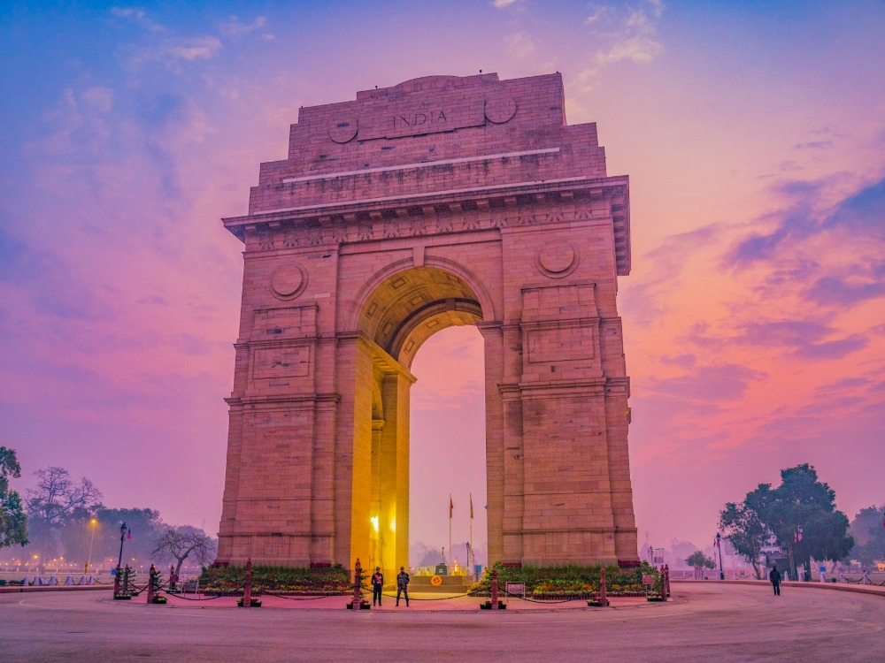
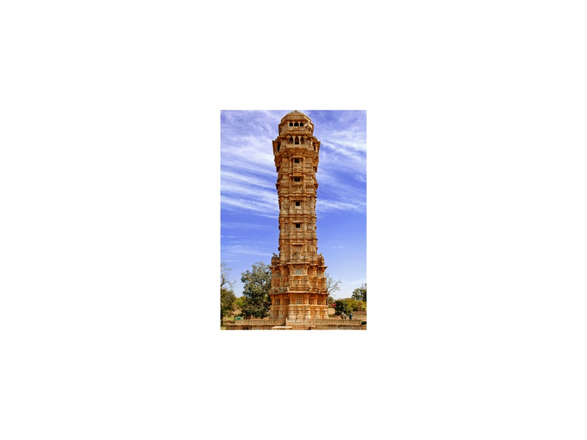
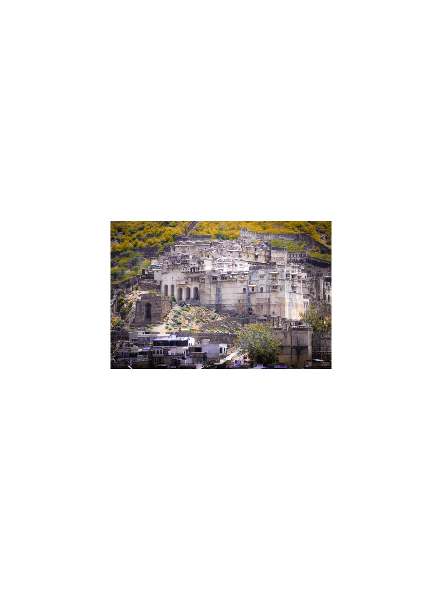
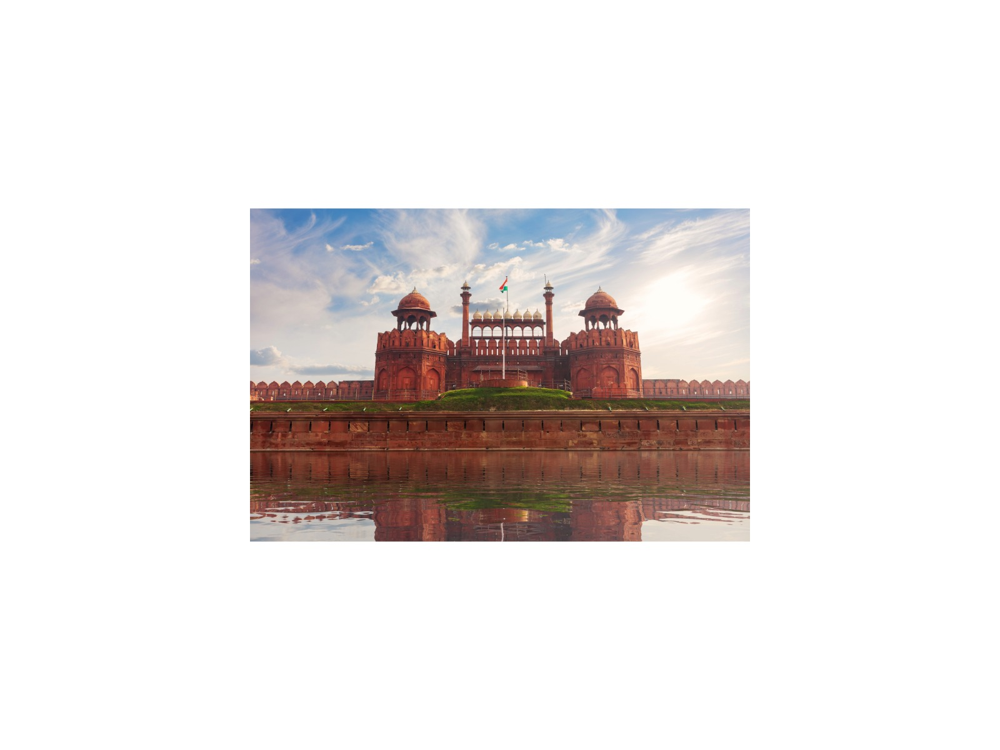

16-Day Taj, Tigers & Forts: The Grand Rajasthan Odyssey
Delhi · Abhaneri · Jaipur · Bikaner · Jaisalmer · Jodhpur · Ranakpur · Kumbhalgarh · Eklingji · Udaipur · Chittorgarh · Bundi · Ranthambore · Bharatpur · Fatehpur Sikri · Agra · Vrindavan
The journey
Sixteen days of Rajasthan's forts, desert dunes, tiger safaris and the Taj, for those who want the whole picture.
Spans 7+ UNESCO World Heritage monuments alongside premier eco-safaris in Ranthambore Tiger Reserve and Keoladeo National Park wetland sanctuary. Full days with several long drives. Best for energetic travellers.
Highlights
- 5 UNESCO Hill Forts (Amber, Kumbhalgarh, Chittorgarh, Ranthambore, Jaisalmer).
- Thar Desert camping & camel/jeep dunes safari at Sam.
- Two tiger tracking safaris in Ranthambore National Park.
- Keoladeo bird sanctuary rickshaw tour.
- Taj Mahal sunrise & Lake Pichola boat ride in Udaipur.
Route and day by day
Schematic route, not to scale.
Day 1Arrival & Imperial Monuments of Delhi
Arrive Delhi; tour Qutub Minar, India Gate, and Humayun's Tomb. Overnight in Delhi.
Day 2Abhaneri Stepwell to Jaipur Walled City
Drive to Jaipur via Chand Baori stepwell in Abhaneri. Sunset at Nahargarh Fort. Overnight in Jaipur.
Day 3Hill Forts & Palaces of Jaipur
Tour Amber Fort (Sheesh Mahal), Jaigarh Fort, City Palace, Jantar Mantar, and Hawa Mahal. Optional Hanthi Gaon visit. Overnight in Jaipur.
Day 4Desert Outpost of Bikaner
Drive to Bikaner (approx. 6–7 hours). Tour Junagarh Fort, Bhandasar Jain Temple, and Laxminarayan Temple. Optional Deshnok rat temple. Overnight in Bikaner.
Day 5Thar Desert Dunes & Desert Camp
Drive to Sam Sand Dunes outside Jaisalmer (approx. 5.5–6 hours). Sunset jeep safari or camel ride across dunes. Overnight in Thar Desert Camp.
Day 6Jaisalmer Living Fort & Havelis
Tour UNESCO Jaisalmer Fort ("Sonar Qila"), Patwon ki Haveli, and Gadisar Lake. Overnight in Jaisalmer City.
Day 7Blue City of Jodhpur
Drive to Jodhpur. Tour Mehrangarh Fort, Jaswant Thada, and Umaid Bhawan Palace. Overnight in Jodhpur.
Day 8Ranakpur Pillars & Kumbhalgarh Wall
Drive to Kumbhalgarh via Ranakpur Jain Temple (1,444 marble pillars). Tour UNESCO Kumbhalgarh Fort wall. Overnight in Kumbhalgarh.
Day 9Udaipur Lakeside Palaces & Eklingji Shrine
Drive to Udaipur. Tour City Palace and Saheliyon ki Bari. Excursion to Eklingji Temple divine kingship shrine. Sunset boat ride on Lake Pichola. Overnight in Udaipur.
Day 10Chittorgarh Fort to Bundi Citadel
Drive to Bundi via UNESCO Chittorgarh Fort (Vijay Stambh, Gaumukh reservoir); approx. 2.5 hours Udaipur–Chittorgarh and 3 hours Chittorgarh–Bundi. Tour Taragarh Fort and stepwells in Bundi. Overnight in Bundi.
Day 11Jungle Citadel of Ranthambore
Drive to Ranthambore Reserve. Tour hilltop UNESCO Ranthambore Fort and Trinetra Ganesh Temple. Overnight in Ranthambore lodge.
Day 12Ranthambore Bengal Tiger Safaris
Morning and afternoon game safaris in Ranthambore National Park tracking tigers. Overnight in Ranthambore.
Day 13Keoladeo Sanctuary & Fatehpur Sikri to Agra
Drive from Ranthambore to Bharatpur (approx. 4 hours) for a rickshaw birdwatching visit in Keoladeo Park, then continue to UNESCO Fatehpur Sikri and Agra (approx. 2 hours). Very long day; start early. Overnight in Agra.
Day 14Sunrise Taj Mahal & Imperial Agra Fort
Sunrise at Taj Mahal. Guided tour of Agra Fort. Optional Mohabbat-the-Taj show. Overnight in Agra.
Day 15Vrindavan Temples & Return to Delhi
Drive to Delhi via Vrindavan temples (approx. 5 hours including the visit). Delhi sightseeing is optional and depends on arrival time: UNESCO Red Fort, Jama Masjid and Swaminarayan Akshardham Temple (Red Fort and Akshardham are closed on Mondays and close early). Overnight in Delhi.
Day 16Leisure & Departure
Morning at leisure before transfer to Delhi International Airport.
Best time to visit
Best Fair Avoid
Best time: Oct–Mar. Also good: Apr, Sep.
October to March is the comfortable season, with warm days and cool mornings. December and January can bring fog and cold at sunrise. April to June is very hot, so we start early and rest at midday. July to September is humid monsoon with fewer visitors. Ranthambore safaris typically close for the monsoon, and desert nights are cold in December and January.
What is included
Included
- Private air-conditioned vehicle with driver
- Licensed guide (English or Russian)
- Monument entry fees
- Hotels (15 nights)
- Safaris and desert camp
Not included
- Flights
- Meals unless stated
- Tips and personal expenses
- Travel insurance
Indicative; your personal quotation confirms exactly what is included.
Good to know
- Taj Mahal is closed on Fridays; avoid scheduling the Taj visit on a Friday.
- Red Fort (Delhi) interior is closed on Mondays.
- Swaminarayan Akshardham is closed on Mondays; no phones, cameras or bags are allowed inside.
- Ranthambore National Park typically closes for the monsoon (about July–September); confirm dates.
Places on this journey
Tiger Fort
Fort Fort
Fort
Fort Desert Camp
Desert Camp Sam Sand Dunes
Sam Sand Dunes Keoladeo
Keoladeo Taj MahalLake Pichola
Taj MahalLake Pichola
Qutub Minar
India Gate Humayun's Tomb
Humayun's Tomb Chand Baori
Chand Baori Nahargarh Fort
Nahargarh Fort Amber Fort
Amber Fort Jaigarh Fort
Jaigarh Fort City PalaceCity Palace
City PalaceCity Palace Jantar Mantar
Jantar Mantar Hawa Mahal
Hawa Mahal Junagarh Fort
Junagarh Fort Bhandasar Jain Temple
Bhandasar Jain Temple Patwon ki Haveli
Patwon ki Haveli Gadisar Lake
Gadisar Lake The Blue City
The Blue City Mehrangarh
Mehrangarh Jaswant Thada
Jaswant Thada Umaid Bhawan
Umaid Bhawan Ranakpur Jain Temple
Ranakpur Jain Temple Saheliyon Ki Bari
Saheliyon Ki Bari Eklingji Temple
Eklingji Temple Chittorgarh Fort
Chittorgarh Fort
Vijay Stambh
Taragarh Fort Agra Fort
Agra Fort
Red Fort Jama Masjid
Jama Masjid Akshardham
AkshardhamQuestions
Is this journey private?
Yes. Every journey is for you and your travelling companions only, with your own guide, car and driver. There are no groups or shared tours.
Can I change the itinerary?
Yes. This itinerary is a starting point. Tell me your interests, pace and dates and I will adjust it before I quote.
Which languages are available?
Vikramjeet guides in English and Russian.
How demanding is this journey?
Full days with several long drives. Best for energetic travellers. The pace rating is fast pace.
How do I book, and when will I know the price?
Send a request with your dates. You receive a personal itinerary and quotation within 24 hours.
Themes
Royal Fortresses & Citadels UNESCO World Heritage Trail Wildlife & Eco-Safaris
Destinations
Delhi Agra & Fatehpur Sikri Jaipur & Abhaneri Jodhpur, Ranakpur & Kumbhalgarh Udaipur & Chittorgarh Jaisalmer & Bikaner Ranthambore, Bundi & Bharatpur
Similar journeys
1 Day1-Day Taj Mahal & Agra Fort: Private Day Journey from Delhi
Sunrise-fresh light on the Taj Mahal and the red sandstone courts of Agra Fort, in a single private day from Delhi, with your own guide and car.
View journey →1 Day1-Day Imperial Delhi & Spiritual Heritage: Private Full-Day Tour
Old Delhi's lanes, Mughal tombs and sacred sites of three faiths, paced around you in one private day.
View journey →1 Day1-Day Jaipur Royal Express: Private Tour from Delhi
Amber Fort, the City Palace and the Pink City's best-known sights in one long day from Delhi, for travellers who have only a day to give.
View journey →